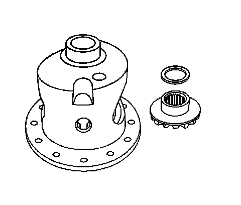
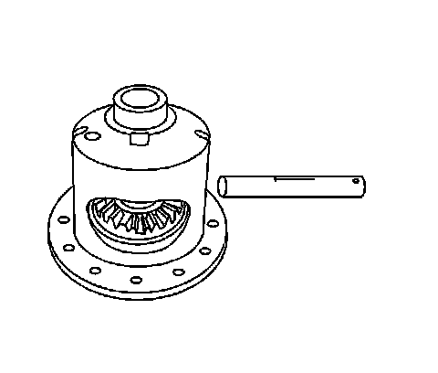
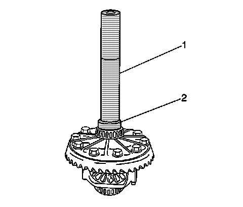

Differential Case Assembly Assemble (8.25 Inch Axle)
Differential Case Assembly Assemble (8.25 Inch Axle)
Tools Required
^ J 8092 Universal Driver Handle - 3/4 in - 10
^ J 22761 Differential Side Bearing Installer
^ J 22888-D Side Bearing Remover Kit
1. Lubricate the pinion and side gears using axle lubricant. Use the correct fluid. Refer to Sealers, Adhesives, and Lubricants.

2. Install the thrust washers and the differential side gears into the differential case.
If the same differential side gears and the thrust washers are being used, install the gears and the washers to the original locations.

3. Install the differential pinion gears by performing the following steps:
1. Position both pinion gears between the differential side gears directly opposite of each other.
2. Rotate the differential side gears until the pinion gears are opposite the opening in the differential case in line with the pinion shaft opening.
4. Install the thrust washers.
Rotate the pinion gears toward the differential case opening in order to permit the sliding in of the thrust washers.

5. Install the pinion gear shaft.
6. Install the new pinion gear shaft lock pin using a hammer and a brass drift.

Important: The mating surface of the ring gear and the differential case must be clean and free of burrs before installing the ring gear.
7. Install the ring gear onto the differential case.

Important: The ring gear bolts have left-hand threads.
8. Install the new ring gear bolts.
Hand start each bolt to ensure that the ring gear is properly installed to the differential case.
Notice: Refer to Fastener Notice.
9. Tighten the ring gear bolts. Tighten the ring gear bolts alternately and in stages, gradually pulling the ring gear onto the differential case.
Tighten the ring gear bolts in sequence to 120 Nm (89 lb ft).

10. Install the differential side bearings by performing the following steps:
1. In order to protect the differential case, install the J 8107-2 in the case on the side opposite the bearing installation.
2. Install the J 22761 (2) and the J 8092 (1) onto the differential case bearing as shown.
3. Drive the differential case bearing onto the case using the J 22761 and the J 8092.